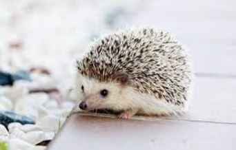
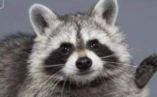
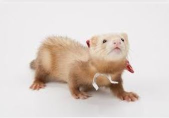

희귀애완동물

이름: 고슴도치
수명: 2~5년
크기: 20~30cm
성격: 날카로운 가시와는 반대로 성격은 매우 온순한 편에 속한다. 하지만 성격이 온순하다고 해서 무턱대로 핸들링을 시도하다가 가시에 찔릴 수 있기 때문에 항상 조심해야한다.
특징: 주로 야행성이며 신체에 6000개~7000개의 가시가 있어 이 가시는 적을 위협하는 역할이나 충격을 약화하는 쿠션같은 역할을 한다.
케어 방법: 동면과 하면을 하는 동물 이기 때문에 온도을 따로 조절하지 않아도 되며 최선이 없어 냄새도 강하지 않다. 하지만 경계심이 많기 때문에 익숙해질 때까지 조심 해야한다.

이름: 라쿤
수명: 야생에서의 수명은 2~3년이지만 반려동물로의 기대수명은 10~15년이다.
크기: 60~110cm
무게: 5~26kg
성격: 외모가 귀엽게 생겼지만 까칠한 성격을 가지고 있어서 함부로 만지려고 하다가 손을 물릴 수가 있다. 또 독립적이거나 의존적인 성향 고르게 성격이 나뉘어져 있다.
특징: 지능이 매우 높고 호기심이 많아서 손을 잘 사용을 한다. 그렇기 때문에 스스로 문을 열수도 있고 과일이나 물건을 잘 훔쳐갈 정도로 똑똑한 편이다.
케어 방법: 다른 반려동물보다 사육 난이도가 정말 높다. 원래 야생동물이기 때문에 입질도 평생가며 털이 많이 날리지 않아 청결함을 가지고 있다.

이름: 패럿
수명: 5~10년
크기: 약 38cm
무게: 0.7~2kg
성격: 패럿은 익살스로운 몸짓으로 사람들과 놀기를 좋아한다. 매우 활발하고 장난기가 많은데 앞발이 서툴러 입을 사용하기 때문에 물어 뜯는 습관이 되어있다.
특징: 야행성으로 하루 20여시간을 잠을 자고 4시간 정도를 활동을 한다. 족제비의 특징을 가지고 있기 때문에 취선이 있고 냄새가 매우 고약하다.